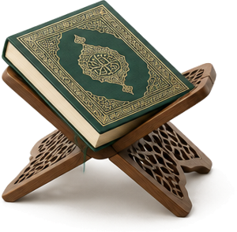
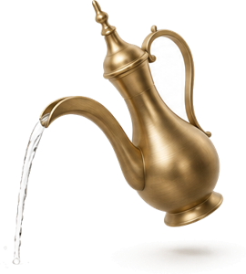
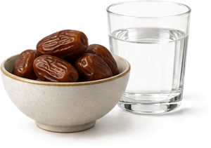

Hisn, in Unchaind's design language
Not a copy of our general edition. This is Unchaind's own visual system: an airy sky, a layered landscape at the bottom, serif headlines, white numbered cards, glossy 3D objects, a deep pill button and a red help bar. It is made Islamic, and the screens are Hisn's. Tap through the phone. It works: answer the quiz, hold to promise, start Help now, breathe, make du'a. Switch the look on the right; the same screen in all three looks is below.
Try it
Everything is clickable inside the phone. The list jumps straight to a screen.
This screen in all three looks
The system
Fajr
Closest to Unchaind: dawn rose over plum hills, indigo buttons. Warm and gentle.
Madinah
Ivory and emerald with gold. The most clearly Islamic, and close to Hisn's green.
Layl
Night: indigo with a gold lamp colour. Like Unchaind's dark mode, for the night hours.
Objects

Muṣḥaf Misbaha
Misbaha Lantern
Lantern Prayer rug
Prayer rug Du'a
Du'a
Wuḍūʾ Night
Night Face down
Face down Open Wait
Open Wait Masjid
Masjid
Fasting Companion
CompanionType
Guard your gaze
Young Serif for titles · Outfit for text · Amiri for the Qur'an · IBM Plex Sans Arabic for Arabic interface.
ذَٰلِكَ أَزْكَىٰ لَهُمْ
What stays Hisn
Every protection layer and tool from the current app (DNS, apps, words, images, lock, guardian, Focus, Open Wait, quiet hours, limits) is in the toolbox and Shield, drawn in this style. Only the look changes.